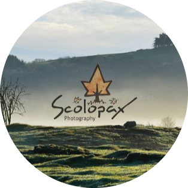

|  | Scolopax PhotographyFamily photography by Frances Woodcock I am an avid photographer who loves to capture candid, authentic and genuine moments that illustrate the strength and joy in relationships. |
I studied at the University of Aberdeen and gained an MA in Film and Visual Culture. Following my graduation, I began a career in childcare and attained an SVQ Level 3 in Social Services (Children and Young People). In ten years of working with young children, I developed a keen passion for children's photography and found great joy in capturing each child's individuality.
| Year | Qualification |
|---|---|
| 2014 | MA Film & Visual Culture |
| 2018 | SVQ Level 3 Social Services (Children and Young People) |
View examples of my work on Instagram